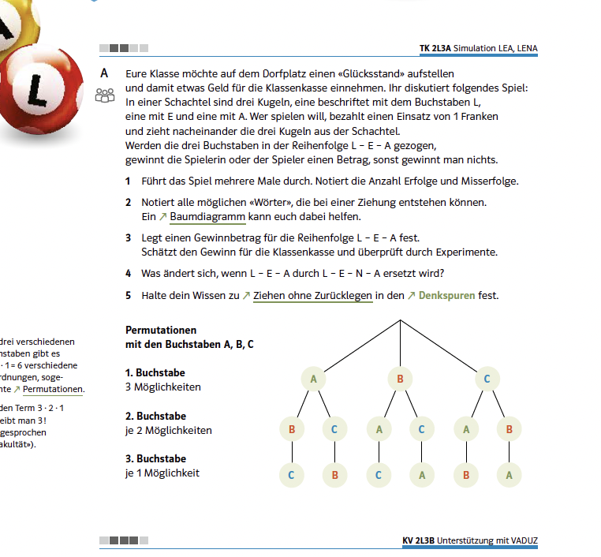
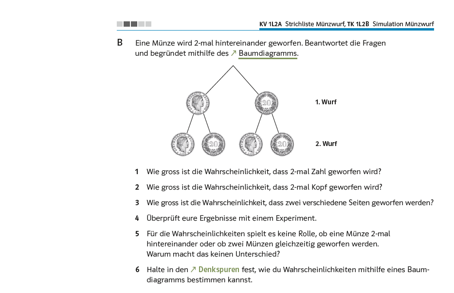

Bezug zur SchulpraxisEin Baum, der schmaler wird

Quelle: Mathbuch 2 (überarbeitete Ausgabe), Aufgabe 2L3 A, S. 68
Von den Begriffen dieses Kapitels kommt in der Sekundarstufe I keiner vor: weder die bedingte Wahrscheinlichkeit noch die Unabhängigkeit noch die Pfadregeln. Gerechnet wird mit ihnen trotzdem, und zwar unablässig. Wie das aussieht, zeigt eine Aufgabe des überarbeiteten Mathbuch:
Halten Sie hier kurz inne. Der Baum verzweigt sich dreifach, dann zweifach, dann gar nicht mehr. Was bedeutet das für die Wahrscheinlichkeiten, die an den Ästen stehen?
Antwort anzeigen
Gezogen wird ohne Zurücklegen. Was auf der zweiten Stufe noch möglich ist, hängt davon ab, was auf der ersten geschehen ist – die schrumpfende Zahl der Äste ist die bedingte Wahrscheinlichkeit in Bildform. Und das Multiplizieren entlang eines Pfades ist die erste Pfadregel.
Bemerkenswert ist, dass das Lehrmittel die Sache benennt: In Teilaufgabe A5 sollen die Lernenden ihr Wissen zum Ziehen ohne Zurücklegen in den Denkspuren festhalten. Die Situation hat also einen Namen – die Struktur dahinter nicht.

Quelle: Mathbuch 2 (überarbeitete Ausgabe), Aufgabe 2L5 B, S. 70
Beide Pfadregeln stehen da
Auch die zweite Regel wird gebraucht, und zwar in derselben Lernumgebung:
Die dritte Aussage ist falsch, und zwar genau um die zweite Pfadregel: Das Ereignis «genau eine 6»\ besteht aus drei Pfaden, richtig wäre $3 \cdot \tfrac{1}{6}\cdot\tfrac{5}{6}\cdot\tfrac{5}{6} = \tfrac{75}{216}$.
Die Vorgängerausgabe hatte an derselben Stelle sieben Aussagen statt drei – darunter diese Summe, ausgeschrieben und als wahr zu erkennen. Wer beide Fassungen nebeneinanderlegt, sieht: In der Überarbeitung steht die Fehlvorstellung ohne ihr Gegenstück da. Die Summenstruktur muss selbst gefunden werden, und im Buch kommt sie nirgends vor.

Quelle: Mathbuch 1 (überarbeitete Ausgabe), Aufgabe L2 B, S. 67
Was dahintersteckt: die bedingte Wahrscheinlichkeit
Halten Sie den Buchstabenbaum neben diesen:
Beim Münzwurf tragen alle Äste dieselbe Wahrscheinlichkeit, beim Buchstabenziehen ändern sie sich von Stufe zu Stufe. Die Handlungsanweisung ist dennoch beide Male dieselbe: entlang der Pfade multiplizieren, mehrere Pfade addieren – und sie führt beide Male zum richtigen Ergebnis.
Auffallen wird es erst, wenn eine Klasse beim Ziehen ohne Zurücklegen in der zweiten Stufe denselben Nenner schreibt wie in der ersten. Dann ist die Frage nicht, welche Regel falsch angewendet wurde, sondern warum sich der Nenner überhaupt ändert – und diese Frage lässt sich nur beantworten, wenn man weiss, dass jeder Astwert eine Bedingung trägt.
Für Sie kommt hinzu, was das Kapitel darüber hinaus zeigt. Die Pfadregel, die Definition der bedingten Wahrscheinlichkeit und die Formel von Bayes sind nicht drei Werkzeuge, sondern eines: \[ \underbrace{P(A\cap B) = P(A)\cdot P_A(B)}_{\text{Pfadregel}} \qquad \underbrace{P_A(B) = \frac{P(A\cap B)}{P(A)}}_{\text{bedingte Wahrscheinlichkeit}} \qquad \underbrace{P_B(A) = \frac{P(A)\cdot P_A(B)}{P(B)}}_{\text{Formel von Bayes}} \] Die erste Form multipliziert entlang eines Pfades. Die zweite ist dieselbe Gleichung, nach dem Astwert aufgelöst. Und die dritte entsteht, wenn man denselben Schnitt auf beide Arten zerlegt und gleichsetzt – sie beantwortet die Frage in der Gegenrichtung.
Quelle: Mathbuch 2 (überarbeitete Ausgabe), Aufgabe 2K3, S. 62
Und die Vierfeldertafel?
Im ganzen Zufallsteil beider Ausgaben kommt sie nicht vor – weder als Darstellung noch als Rechenhilfe. Das ist keine Nachlässigkeit: Sie passt zu Datensätzen mit zwei Merkmalen, und der Zufallsteil arbeitet mit mehrstufigen Vorgängen. Dafür ist das Baumdiagramm die passende Darstellung, und es trägt weiter – über zwei Stufen hinaus, bei beliebig vielen Ausgängen pro Stufe.
Im Datenteil dagegen ist die Struktur da, und zwar geschrieben:
Wer so fragt, erhebt zwei Merkmale gleichzeitig und füllt damit eine Kreuztabelle. Auch die Diagramme, die anschliessend entstehen, tragen diese Struktur – Säulen für Jungen und Mädchen nebeneinander, Balken für Erwachsene und Jugendliche. Für zwei Merkmale mit je zwei Ausprägungen ist die Tafel dort das natürlichere Mittel als ein Baum.
Fazit
Von diesem Kapitel geht die Sache vollständig in den Unterricht ein und kein einziger Begriff. Beide Pfadregeln werden gebraucht, bedingte Wahrscheinlichkeiten stehen an jedem Ast eines Baumes, in dem ohne Zurücklegen gezogen wird – und benannt wird nichts davon.
Drei Dinge brauchen Sie deshalb. Erstens die Fähigkeit zu erkennen, wann ein Astwert von der Vorgeschichte abhängt. Sonst können Sie eine Klasse nicht davor bewahren, in der zweiten Stufe denselben Nenner zu schreiben wie in der ersten – und ihr auch nicht erklären, warum er sich ändert.
Zweitens das Wissen, dass die Handlungsregel deshalb immer funktioniert, weil sie die allgemeine Form ist und die Unabhängigkeit nur ein Sonderfall. Wer das weiss, muss nicht zwei Regeln unterscheiden, sondern sieht eine.
Und drittens die dritte Auflösung. Wer eine nach Gruppen aufgeschlüsselte Grafik liest, hat die Umkehrfrage sofort im Kopf – und die Antwort darauf steht dort nicht. Berechenbar ist sie mit den Angaben, die das Lehrmittel selbst liefert.